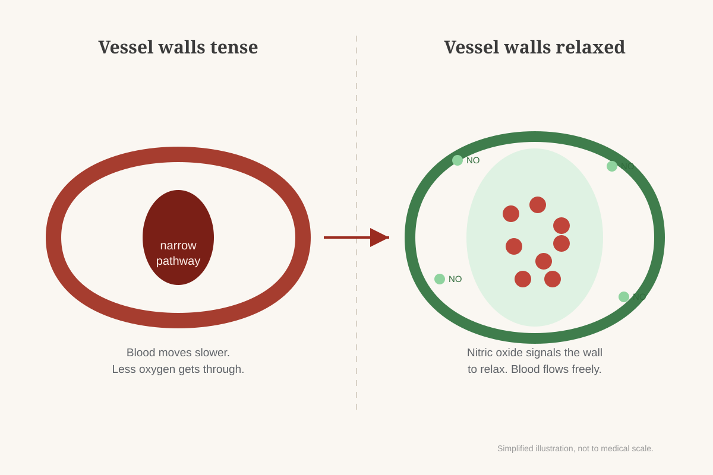

She Asked If It Was Her. It Wasn't.
By 58 I had three slow leaks draining my energy, not one — and the night my wife asked that question is when I finally found out why.
I fix things for a living — boilers, mostly, at the same Ohio plant for 22 years. So it was strange as hell to feel like something in me was broken, and I couldn't find it.
It started around 55. I'd get home at 6, eat dinner, sit on the couch "for a minute," and wake up at 9:30 with the TV still on. My wife, Karen, would already be in bed.
One night she was standing in the hallway, and she asked me something I'll never forget:
We've been married 31 years. Of course I do. But I didn't have an answer for why I had nothing left for her at the end of the day. I just said I was tired. Again.
That night I lay awake thinking, this can't be the rest of my life.
"It's normal for a man your age"
I'm not the kind of guy who runs to the doctor. But Karen pushed, so I went. My blood work was "fine." My blood pressure was controlled with medication. My doctor shrugged and said the words a lot of men my age have heard:
"That's pretty normal for a man your age."
I don't know about you, but I didn't want to accept "normal" if normal meant sleeping through my evenings for the next 20 years.
And it turns out I'm far from alone. A survey for Eli Lilly found that nearly 40% of men with intimate health concerns had never even talked to their doctor about it. We just keep quiet and blame our age.
What I tried first (and why none of it lasted)
I want to be honest about this part, because I wasted time and money on it.
- More coffee, then energy drinks. It worked until about 3 PM. Then I crashed harder, and I slept worse at night.
- A "men's booster" I saw on TV with a "free trial." I didn't feel a thing. Three weeks later there was a charge of over $60 on my credit card for a subscription I never knowingly signed up for. It took four phone calls to cancel.
- Just "pushing through." I told myself to toughen up. That lasted until the next time I fell asleep on the couch.
The trial thing still makes me angry. And I found out later I wasn't the only one: the Federal Trade Commission has taken action against supplement marketers before for exactly this, turning a "free trial" into a recurring charge customers never agreed to. Some companies in this space count on men being too embarrassed to complain.
The explanation that finally made sense: three slow leaks
The answer came from my brother-in-law Dave, Karen's older brother. He's five years older than me, a retired shop teacher, and he went through the exact same thing when he was my age. It got bad enough that my sister-in-law moved into the guest room for a while. That scared him into figuring it out, and he's the one who finally sat me down. We were standing in my driveway, and he pointed at the rear tire on my truck.
"That tire's got a slow leak," he said. "You fill it every morning, and it rolls fine for a while. By afternoon it's low again. Now imagine it has three small holes. That's you."
"I spent a year thinking it was one problem," he said. "It's not. After 50, it drains out of three places at the same time."
"Coffee patches leak number one for a few hours," Dave said. "A 'booster' goes after one thing. Nobody's taking care of all three, every day. So you fill the tire, and by 3 o'clock it's flat again. That was me for two years."
I stood there in my driveway and felt something I hadn't felt in a long time. Not guilt. Relief. I wasn't lazy. I wasn't "just old." I had three slow leaks, and I'd been pumping air into one.

Does this sound like you?
Dave said these were the signs he ignored for two years. I said yes to every one.
- You feel fine in the morning, but you hit a wall in the afternoon
- You fall asleep on the couch most evenings, even after a full night's sleep
- You feel less drive and less patience than you did at 45
- You're carrying more stress than ever, and it never really turns off
- You've wondered if your partner has noticed, but you haven't talked about it
If you said yes to most of these, you're far from alone. In a national survey for Eli Lilly, nearly 4 in 10 men with these kinds of concerns said they had never brought it up with their doctor. Dave was one of them for two years. I was one of them for three. Most of the men reading this page right now are, too.
If that sounds familiar, first talk to your doctor to rule out anything medical. Then keep reading, because what I found next is what finally gave me my evenings back.
Looking for something that took care of all three
After the "free trial" disaster, I made myself a list. Whatever I tried had to:
- Support all three leaks, not just one
- Use ingredients with a real history, not a lab-made "blend" I'd never heard of
- Be simple enough that I'd actually take it every day
- Not require a prescription or an awkward conversation
- Charge my card once and leave it alone after that
Dave sent me a link to something called HorseFil. I'll be honest, I laughed at the name. Then I read the ingredient list, and I stopped laughing.
What's inside, and what each one is known for
HorseFil is a strawberry-flavored gummy. You take one a day. No pills to swallow, which mattered to me, because my pill organizer is already full enough.
Here's what's in it, matched to the three leaks. I checked every claim myself, and I'm only telling you what the research actually says:
Nobody promised me a miracle, and I wouldn't have believed it if they had. It's a simple daily habit. (What the research does and doesn't say is in the FAQ below.)
HorseFil at a glance
- What it is
- A dietary supplement in gummy form, "Male Vitality Formula"
- Flavor
- Natural strawberry flavor
- How to take it
- 1 gummy a day with a glass of water, 20 to 30 minutes before a meal
- Per bottle
- 30 gummies (a one-month supply)
- Made in
- The USA, with globally sourced ingredients
- Purchase
- One-time order. No subscription, no automatic renewals
- Guarantee
- 60-day money-back guarantee (see terms on the official website)
What changed for me
I'm not going to tell you it was overnight, because it wasn't. I take one gummy every morning with my coffee, before breakfast. It takes five seconds, and honestly, it tastes better than anything else in my medicine cabinet.
Day 19 is the one I remember. It was a Thursday, and I got through the whole afternoon without a single energy drink. I'd been buying two a day, every workday, for almost two years.
Week 6: the couch nights stopped. Before, I was out cold in my recliner by 8 PM five nights out of seven. Now I was wide awake at 10, watching the game next to Karen, and then we walked down that hallway to bed together. I had more patience with my crew, too.
Around day 45, Karen and I started walking a mile around the neighborhood after dinner. We've missed maybe four nights since. One night she stopped, looked at me and said, "You seem happier. You seem like you again."
That hallway where she asked me "is it me?" doesn't feel like that anymore. Karen doesn't go to bed alone now. We go together, every night.
A few weeks ago she rested her head on my shoulder and said, "There's the man I married." I'm not ashamed to say I had to look away for a second. That meant more to me than anything else in this story.
HorseFil vs. what I tried before
| Coffee & energy drinks | TV "booster" free trial | HorseFil | |
|---|---|---|---|
| Leaks it supports | 1, for a few hours | Mostly 1 | All 3, every day |
| Daily routine | Several cups a day | Capsules | 1 strawberry gummy |
| Billing | — | Hidden subscription | One-time purchase |
| Guarantee | — | Hard to cancel | 60-day money-back |
Before you talk yourself out of this
How to get HorseFil (and which supply I chose)
The night I ordered, Karen was already asleep and I was on the couch again. I figured if it didn't work, I'd get my money back. Here's what you'll see on the official website, so there are no surprises:
Prices were still showing on the official website when I checked this week. The discount is only there — I've seen look-alike gummies on marketplaces that aren't the real thing.
I went with the 6-bottle supply, and I wasn't the only one: according to the company, 96% of its customers choose the 6-bottle option. After the trial disaster, I wanted to give it a fair chance over several months. At about $1.63 a day, it costs less than one of the two energy drinks I used to buy every day.
- You're charged once: nothing auto-ships, nothing gets billed again down the road.
- A 60-day window to change your mind and get your money back, starting from the day you order. The company asks that you give it at least 30 days of actual use first. The exact refund steps are on the official website.
- What you'll see: the official HorseFil order page with the three options above.
See the supply options on the official website:
Check Today's Price on the 6-Bottle Supply »Questions I had before ordering
What exactly is HorseFil?
A dietary supplement in strawberry-flavored gummy form, made in the USA. It combines Tongkat Ali, Maca Root, Ashwagandha, Epimedium, L-Arginine and Grape Seed Extract, and is designed to support daily energy and male vitality.
How do I take it?
One gummy a day with a glass of water. The company suggests taking it 20 to 30 minutes before a meal. I take mine in the morning.
How long until I notice anything?
Everyone is different, and some men may not notice a change. For me, the afternoons felt different around day 19, and by week 6 I was staying up until 10 PM instead of falling asleep by 8. The company recommends consistent daily use, which is why most people choose a multi-bottle supply.
Is it a subscription?
No. The company bills your card a single time for the package you choose. It doesn't set up a recurring order, and there's nothing that charges you again later without you placing a new order yourself.
Can I take it with my medication?
Talk to your doctor first. This matters most if you take medication for blood pressure, heart conditions, diabetes or thyroid, or you take nitrates or ED medication. Never stop or change your medication on your own.
What does the research actually say? How much of each ingredient is in each gummy?
The company doesn't claim HorseFil will make you 25 again. The studies mentioned on this page were done on the ingredients themselves, not on this gummy. The official website lists the ingredients but not the amount of each one, so don't expect the exact results of those studies. Think of it as a simple daily habit to support energy and vitality, not a magic pill.
What if it doesn't work for me?
Your order is backed by a 60-day money-back guarantee from the date of purchase. The company asks you to use it for at least 30 days first. Read the full terms on the official website.
If you're the guy asleep on the couch right now
I spent three years telling myself it was "just my age." If that's you, I want you to hear what I needed to hear: it may not be just your age, and you're not weak for feeling this way. You may simply have three slow leaks that nobody told you about.
Last week Karen dragged out the old badminton set from the garage. We haven't touched it in four years. We played in the backyard until it got too dark to see the birdie, and I wasn't tired when we came in.
That's the difference. Not a speech. A Tuesday night with a badminton racket in my hand instead of the couch.
Dave was right in that driveway. You don't need a bigger engine. You need to patch the leaks. All three, a little every day, instead of pumping air into one and wondering why you're flat again by 3 o'clock.
Talk to your doctor. Take care of your sleep and your stress. And if you want to try the simple daily habit that fit into my real life, take a look at the official website.
See the supply options and guarantee terms on the official website:
Stop Falling Asleep by 8 PM »From $49 per bottle